10 部片单 · 恐怖 / 科幻 / 惊悚 / 悬疑 / 剧情
| # | 片名 | 类型 | 评分 / 状态 |
|---|---|---|---|
| 01 | 卧虎藏龙 | 剧情 / 武侠（中国台湾 · 中国香港 · 美国 · 中国大陆合拍） | 8.2 / 98% / 94 |
| 02 | 一一 | 剧情 / 家庭（中国台湾 · 台北中产的一年） | 9.1 / 97% / 94 |
| 03 | 双瞳 | 惊悚 / 悬疑（中国台湾 · 中国香港 · 道教连环杀人） | 8.1 / 7.0 |
| 04 | 神探 | 惊悚 / 悬疑（中国香港 · 人格分裂） | 8.5 / 7.2 |
| 05 | 入殓师 | 剧情 / 家庭（日本 · 生死与告别） | 8.9 / 81% / 71 |
| 06 | 阳光普照 | 剧情 / 家庭（中国台湾 · 一个家的崩解） | 8.6 / 7.4 |
| 07 | 娑婆诃 | 悬疑 / 惊悚（韩国 · 邪教与末世说） | 7.7 / 6.6 |
| 08 | 驾驶我的车 | 剧情 / 心理（日本 · 语言与沉默） | 7.9 / 97% / 91 |
| 09 | 咒 | 恐怖 / 伪纪录片（中国台湾 · 邪灵与诅咒） | 6.9 / 6.6 |
| 10 | 首尔之春 | 剧情 / 历史惊悚（韩国 · 双十二那一夜） | 8.8 / 7.6 |
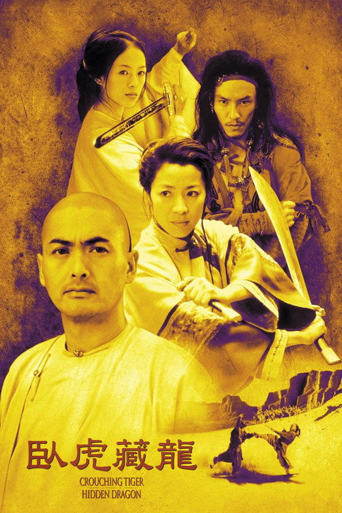
卧虎藏龙 Crouching Tiger, Hidden Dragon
「把手握紧，里面什么也没有；把手松开，你就得到一切。」
剧情梗概
一代大侠李慕白决意退出江湖，托红颜知己俞秀莲把青冥剑送去京城交给铁贝勒。剑在当夜被窃，追查之下，偷剑的是一个即将出嫁的王府千金玉娇龙——她还有一个从没露过面的师父。李慕白在秀莲与娇龙之间看见了自己：一个想放下剑、却始终放不下的人。
亮点
- 2001 年第 73 届奥斯卡拿下最佳外语片、最佳摄影、最佳艺术指导、最佳原创配乐四项，共获十项提名。
- 动作指导袁和平；竹林那场戏在竹梢上实拍，演员靠钢丝悬吊，李安要求「轻」，威亚被尽量擦掉——飞起来的不是侠客，是被拿走了重量的身体。
- 鲍德熹的摄影与谭盾的配乐（马友友大提琴）；配乐里大量留白，鼓点只在打斗时才出现。
- 章子怡当时 21 岁，前几周都还没拿到正式的角色确认，一直以为自己随时会被换掉。
- 周润发的李慕白说的是带广东口音的国语，李安没有让他配音，理由是「他说话的方式就是李慕白」。
- 北美票房超过 1.28 亿美元，长期保持北美外语片票房纪录；「武侠」第一次作为全球商品被看见，是从这部片开始的。
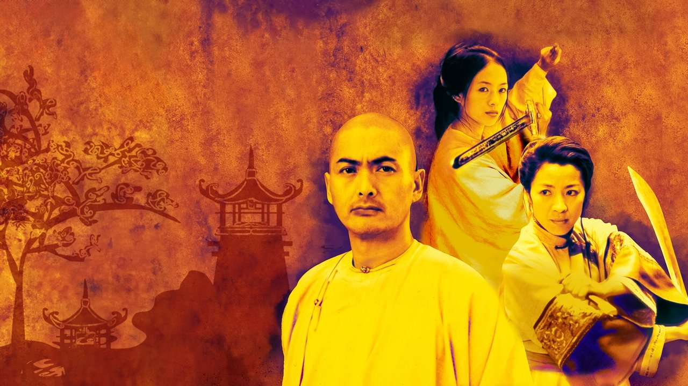
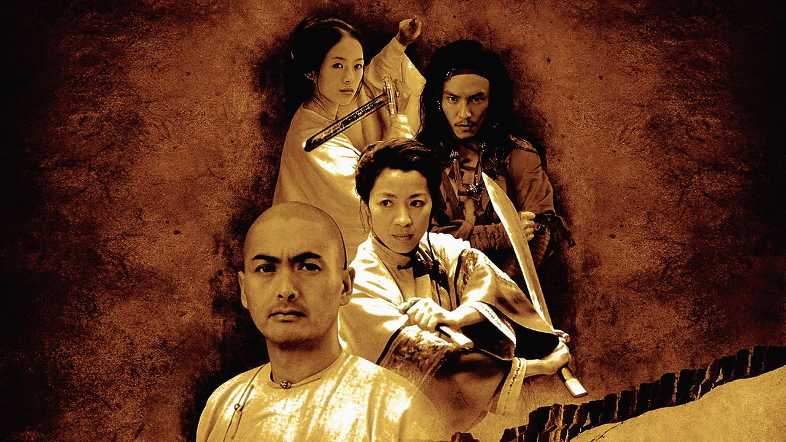
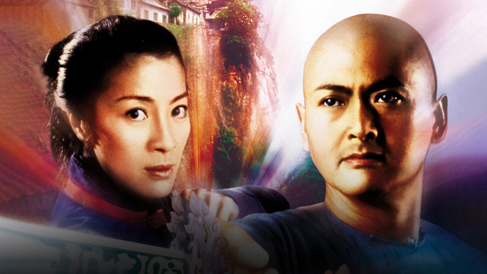
导演与主创 · 他们的历史作品

 断背山
断背山 绿巨人浩克
绿巨人浩克 双子杀手
双子杀手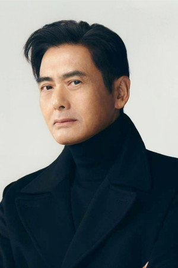
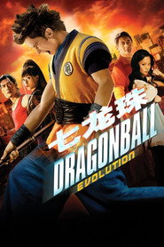
七龙珠：进化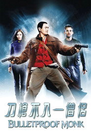
防弹武僧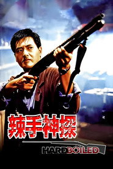
辣手神探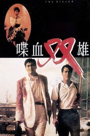
喋血双雄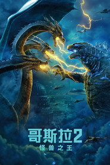
哥斯拉2：怪兽之王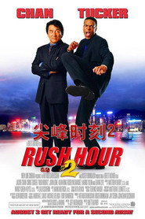
尖峰时刻2短评（轻微剧透）
《卧虎藏龙》最反武侠的地方在于：全片只有两场真正快意的打斗（夜闯府衙、茶馆），其余每一场都是被迫的——李慕白想拿回剑，俞秀莲想保住体面，玉娇龙想证明自己还没被安排好。轻微剧透：核心转折在竹林，李慕白追上去本是要收她为徒，玉娇龙答应的条件却是「你先打赢我」。李安把这场戏拍得像一次调情，也像一次授剑，直到碧眼狐狸出现，一切变成清算。真正的结论是结局那一跳：玉娇龙从武当山顶坠下。她不是在赎罪，是她终于听懂了李慕白那句「把手松开」——而她能松开的只有自己的命。李慕白至死没说出那句话，俞秀莲把剑扔进云海。这三个人里，只有最不江湖的那一个学会了放下。
为什么值得一看
想看「武侠不只是打」的人；想理解华语片在 2000 年为什么能同时拿下北美市场与奥斯卡的人。无血腥，节奏舒缓，含一次坠崖与轻度的江湖恩怨。内地未公映，流媒体可看。
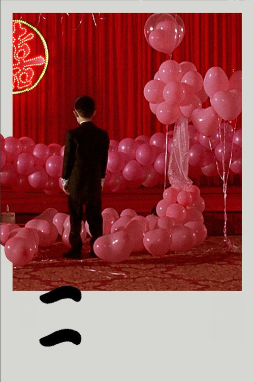
一一 Yi Yi: A One and a Two
「电影发明以后，人类的生命至少延长了三倍。」
剧情梗概
台北，简家。婆婆中风昏迷，医生要求家人每天轮流跟她说话。父亲 NJ 在老同学的公司里进退两难，母亲敏敏上山修行，女儿婷婷正经历第一段感情，八岁的小儿子洋洋拿着相机拍所有人的后脑勺——因为「你自己看不到，我拍给你看」。
亮点
- 杨德昌凭此片拿下 2000 年第 53 届戛纳电影节最佳导演；这部 173 分钟的作品被普遍认为是他一生电影的总结。
- 片名「一一」取自「一个一个」。杨德昌说，人生就是一件事接着一件事，所以排起来就是「一一」。
- 三条线索并行：婆婆昏迷后每天必须有人对她说话、NJ 在东京重遇初恋、婷婷的第一段恋爱。全片没有一个镜头是在「解释」，重复出现的只有开门、关灯、电梯按钮。
- 男主角 NJ 由吴念真饰演——他本职是小说家与编剧（《悲情城市》《恋恋风尘》），不是职业演员。杨德昌要的就是他那种被生活磨过的脸。
- 金燕玲凭母亲敏敏一角拿下第 37 届金马奖最佳女配角；她在片中那场崩溃戏，是全片情绪唯一一次外放。
- 八岁的洋洋用相机拍所有人的后脑勺，理由是自己看不到的一半，要拍给别人看——这是整部片的题眼。
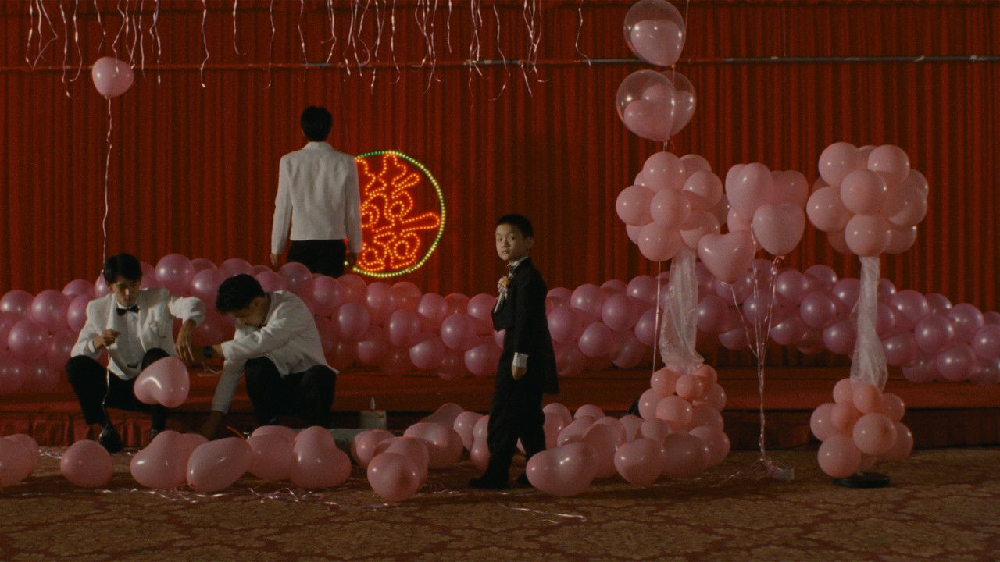
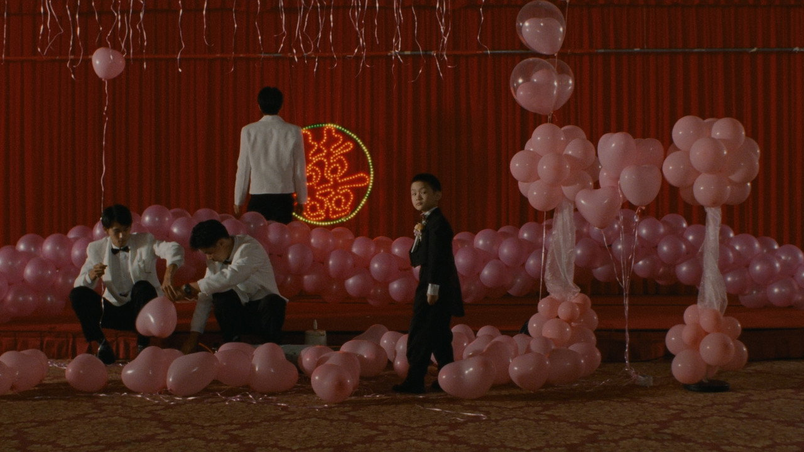
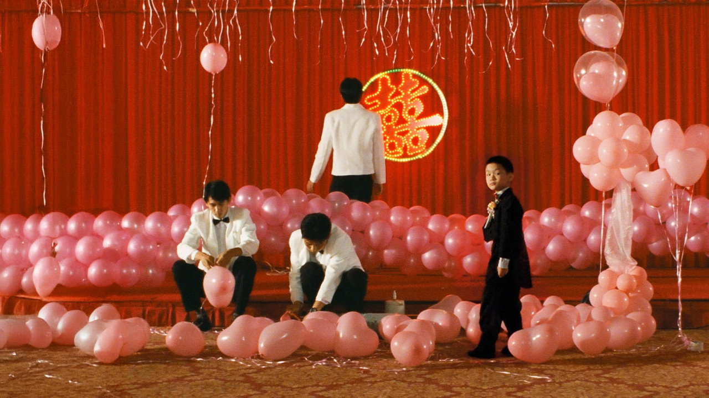
导演与主创 · 他们的历史作品
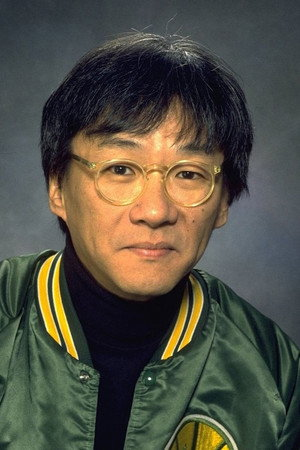
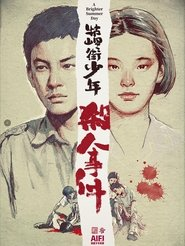
牯岭街少年杀人事件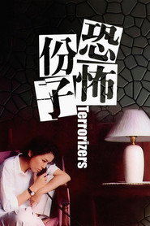
恐怖份子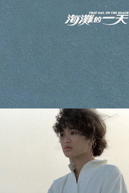
海滩的一天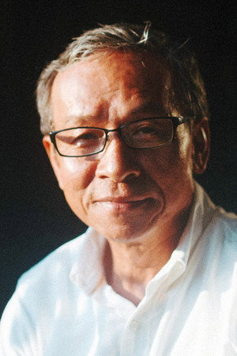
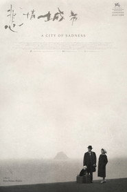
悲情城市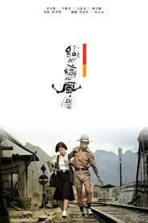
恋恋风尘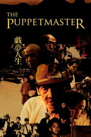
戏梦人生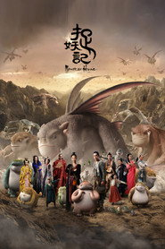
捉妖记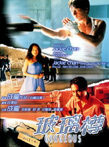
玻璃樽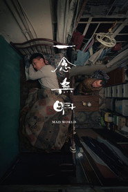
一念无明短评（轻微剧透）
《一一》几乎没有情节，它给的是三个小时的具体生活。轻微剧透：真正的关键在东京线——NJ 和初恋阿瑞在东京把当年重走了一遍，最后阿瑞在门外崩溃，NJ 站在门口说他从来没有爱过别人。回台北后他对昏迷的婆婆承认：如果重来一次，他大概还是会做同样的选择，因为「没有什么不一样」。这句话是整部片的答案——洋洋拍照、婷婷失恋、敏敏上山，所有人都在找「另一半自己看不到的东西」，而杨德昌的答案是：看得见，但日子还是得这样过。结尾婆婆去世，洋洋在葬礼上念了一段写给她的信：「我也老了。」一个八岁的孩子说出这句话，是全片最狠的一刀。
为什么值得一看
想认真看一次「家庭」的人；能接受三小时慢节奏、愿意被生活本身的密度压住的人。无暴力无血腥，情绪克制但很重。内地未公映，流媒体与碟片可看。
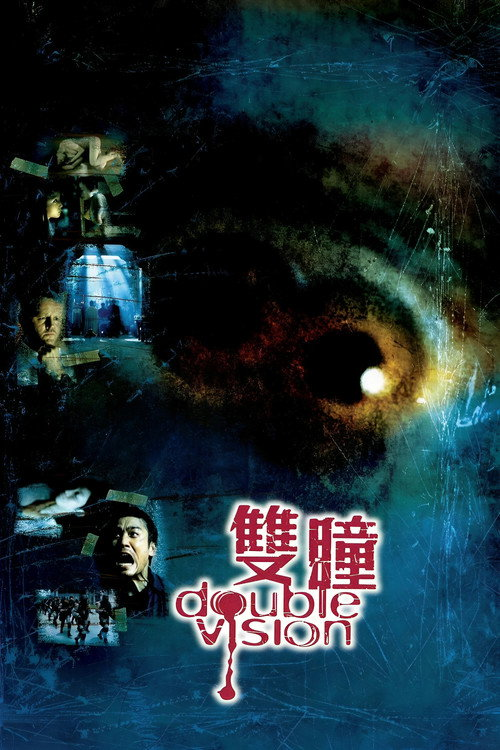
双瞳 Double Vision
「因爱生忧，因爱生惧；若离于爱者，无忧亦无惧。」
剧情梗概
台北连发三起离奇命案：一个企业老板在办公室被冻死，一个女人在火灾现场被烧死，一个牧师被开膛剖腹。法医验出死者体内都有一种罕见的黑霉菌。警局从美国请来 FBI 专家凯文协助，与台北刑警黄火土搭档。黄火土因为两年前举报同事贪污被整组人孤立，自己也正在失去家庭。线索指向一座藏在医院大楼里的现代道观。
亮点
- 陈国富自编自导，剧本与苏照彬合作；是他从作者电影转向华语工业的关键一部。
- 全片把道教的「五狱」（寒冰狱、火坑狱、抽肠狱、剜心狱、拔舌狱）直接做成了连环杀人手法——这是华语惊悚片里极少见的、把本土信仰体系完整搬进现代刑侦的设计。
- 梁家辉演的黄火土全程被同事排挤，几乎没有一场戏是轻松的；他的妻子（刘若英）台词极少，只在几场戏里吃饭、洗碗、发呆。
- 结尾那座真武观被做成了「藏在现代医院里的庙宇」，美术组在台北搭了一整套实景，没有用 CG。
- 2002 年台湾本地最卖座的华语片之一；北美发行权由哥伦比亚买下，是当时少数被好莱坞大厂买下的华语惊悚片。
- 口碑在国内一直偏高（豆瓣 8.1），海外只算合格（IMDb 7.0）——分歧主要在结尾那句「有爱，就是不死」。
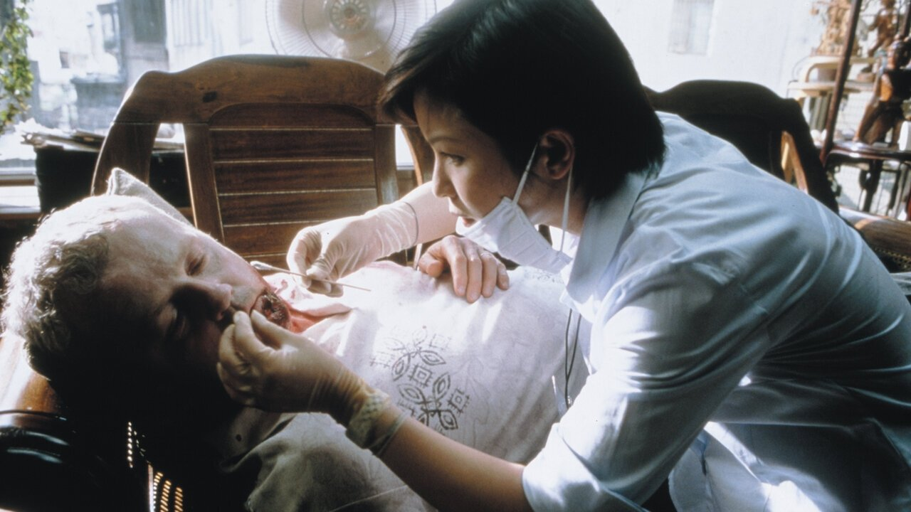
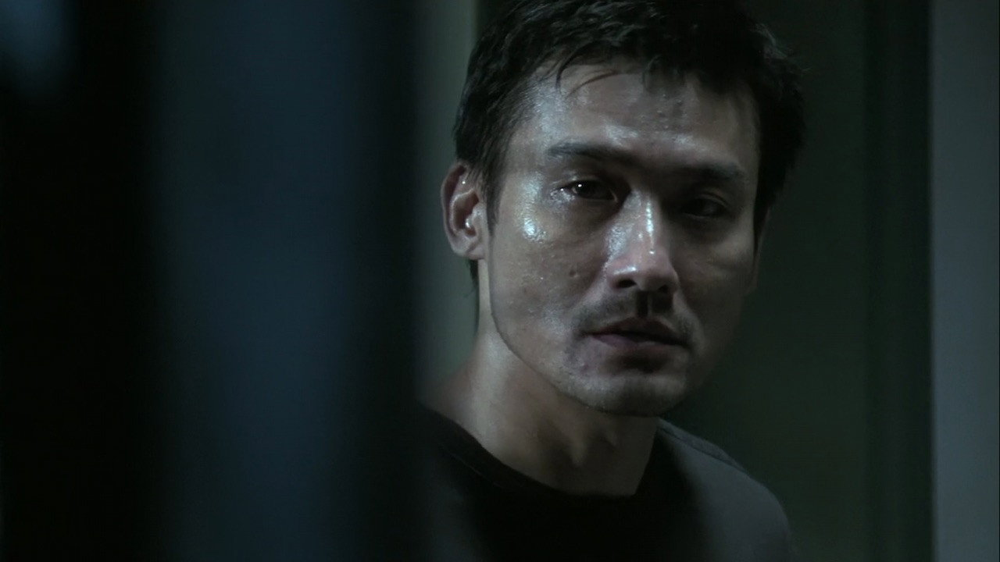
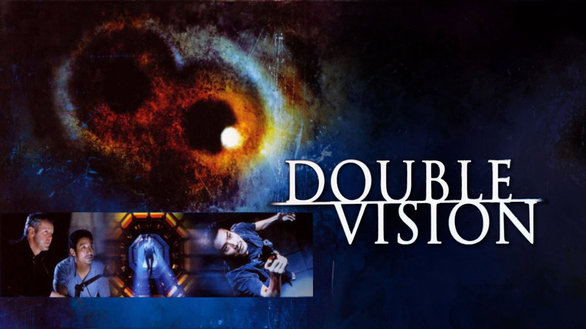
导演与主创 · 他们的历史作品
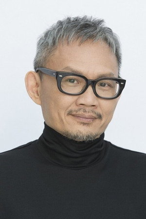
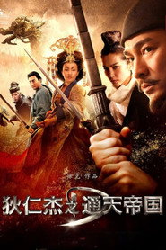
狄仁杰之通天帝国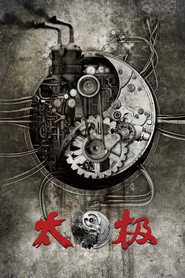
太极1：从零开始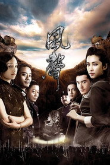
风声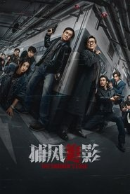
捕风追影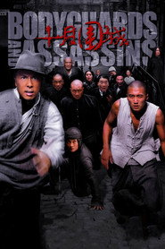
十月围城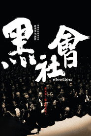
黑社会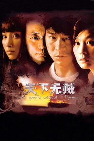
天下无贼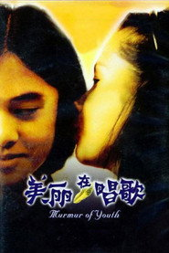
美丽在唱歌短评（轻微剧透）
《双瞳》最聪明的设计是把「修仙」和「刑侦」焊在一起：命案手法完全按五狱来排——冻死、烧死、开膛、剜心、拔舌——法医那条线给的是科学解释（霉菌致幻），黄火土那条线给的是信仰解释。轻微剧透：真正的转折在真武观。那不是一场驱魔，是一次「送行」；而黄火土最后面对的那个东西，恰恰是他自己一直不肯承认的那部分。结局他在病床上醒来，说了那句「有爱，就是不死」。这句台词让全片的恐怖退了一格，剩下的是选择：信科学的人活了下来，信爱的人成了仙。它和《七宗罪》是同一类结构，但底层逻辑完全不同——这里没有惩罚，只有「能不能放下」。
为什么值得一看
想看「用中国自己的信仰体系做惊悚」的观众；喜欢《七宗罪》《哭声》这类「按某个体系杀人」结构的人。含开膛、剜心、枪战等血腥画面，情绪压抑。内地未映，流媒体可看。
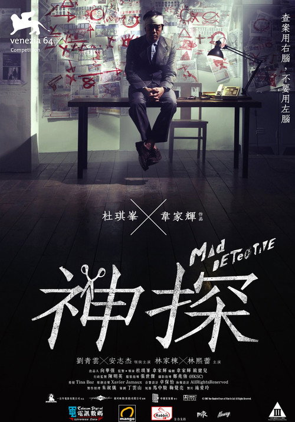
神探 Mad Detective
「我同你讲，你唔好惊。」（我跟你说，你别怕。）
剧情梗概
重案组探员何家安接手一桩失枪案：警员高志伟的配枪失踪，一名便利店劫匪用它杀了人。他去找已经退休的「神探」陈桂彬——一个能看见别人心里「鬼」的前警探。陈桂彬看到高志伟身后站着七个人，每一个都是他丢掉的一部分。
亮点
- 韦家辉编剧、杜琪峰导演，两人是银河映像的核心组合（《大只佬》《PTU》《黑社会》）。
- 陈桂彬那套「看见人心里的鬼」被完全实体化：每个角色身后跟着一个或多个演员，造型与人一模一样，只有眼神和站姿不同。全片没有一个特效镜头。
- 故事灵感来自香港真实的警员杀警夺枪案（徐步高事件，2001–2006）——它把一桩社会新闻改写成了一次人格解剖。
- 片长只有 90 分钟，节奏极紧，几乎没有一场闲戏。
- 结尾镜子前的那场枪战是技术高潮：五个角色、五把枪、多个倒影，靠机位、剪辑和替身完成，而不是靠 CG。
- 口碑国内明显高于海外（豆瓣 8.5 / IMDb 7.2）：国内观众吃它的结构，海外更多把它当成一部普通的香港警匪片。
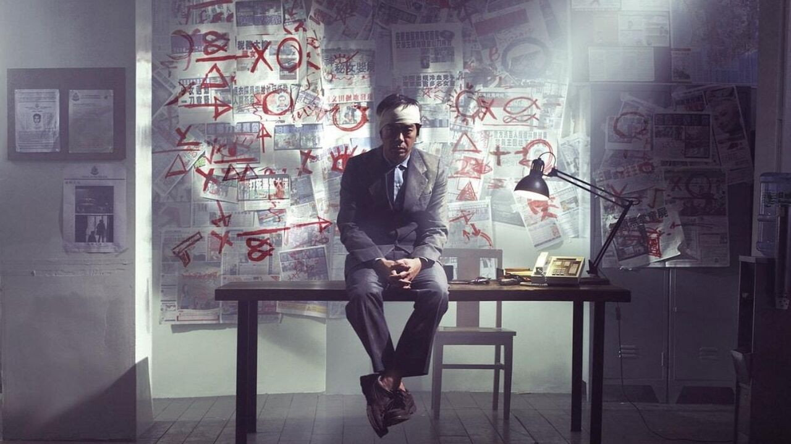
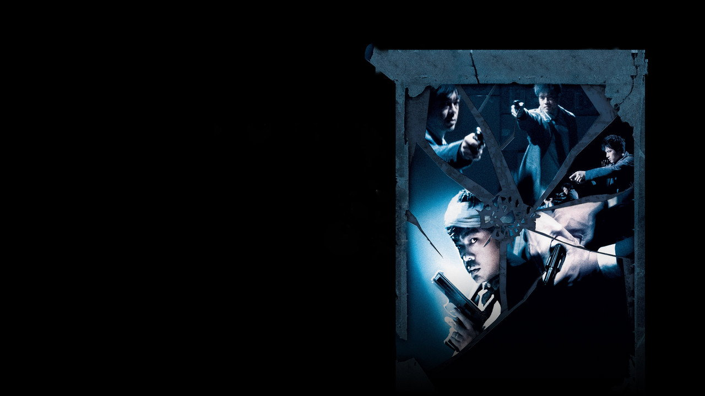
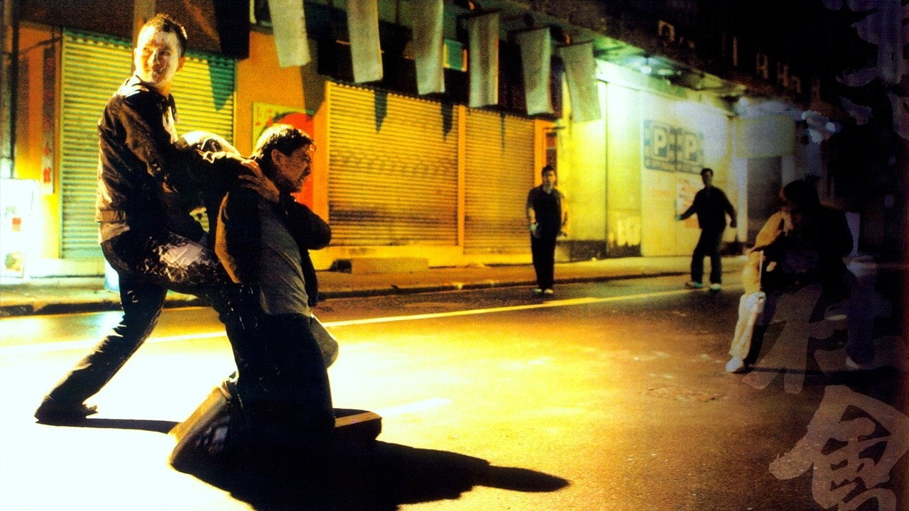
导演与主创 · 他们的历史作品
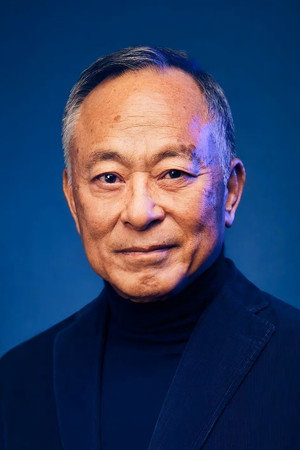
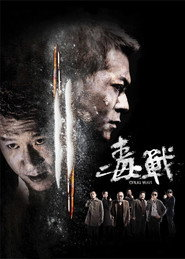
毒战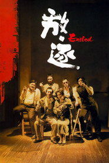
放·逐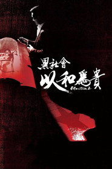
黑社会2：以和为贵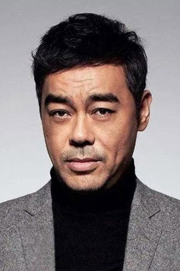
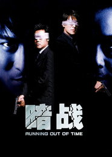
暗战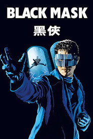
黑侠短评（轻微剧透）
《神探》的核心不是破案，是「一个人身上住了几个人」。高志伟身后那七个鬼分别是胆小的、狡猾的、贪婪的、暴力的、会算计的、会撒谎的、负责收拾的；等他连自己都看不见它们的时候，说明他已经不需要分身了——他自己就是那七个人。轻微剧透：真正的转折在最后。何家安拿到枪之后，身边的人一个个被换掉；镜头最后停在他脸上时，他身后跟着的鬼变成了一个年轻女孩——一个会害怕、会想办法、会替自己找理由的人。也就是说，神探死了，「鬼」传给了下一个好人。杜琪峰把整部片拍成了一个传染过程，九十分钟里没有一个镜头是多余的。
为什么值得一看
想看华语电影里最锋利的一次「人格分裂」书写的人；喜欢《搏击俱乐部》《一级恐惧》这类结构的观众。含枪战与血腥，节奏非常快。内地未映，流媒体可看。
入殓师 Departures (おくりびと)
「让已经冰冷的人重新焕发生机，给她永恒的美丽。」
剧情梗概
大悟原本是东京一家乐团的大提琴手，乐团突然解散，他背着房贷和妻子美香回到山形县老家。在报纸上看到一则「旅途助理」的招聘，面试当天才知道是入殓师。社长当场录用他，他却一直不敢告诉妻子自己每天在做什么。
亮点
- 第 81 届奥斯卡最佳外语片（2009），是日本片时隔多年再拿此奖，也是当年最大的冷门之一。
- 久石让配乐；大提琴是贯穿全片的乐器，大悟在河堤上拉琴的段落基本是即兴，本木雅弘为此练了三个月。
- 泷田洋二郎出身于日活的低成本类型片行业，拍了十余年商业片，六十岁前后突然拍出《入殓师》与《壬生义士传》。
- 本木雅弘为角色真的跟着入殓师学习，片中所有手部动作都是规范操作；他凭此片拿下日本电影学院奖最佳男主角。
- 改编自青木新门的自传随笔《纳棺夫日记》；作者本人是做过纳棺师的人。
- 内地 2021 年 4 月 30 日首次公映——一部十三年前的日本片，在内地还能被排上院线，本身就说明了它的口碑。
导演与主创 · 他们的历史作品
短评（轻微剧透）
《入殓师》不打算让你哭，它只是在重复同一件事：一双手、一块布、一个顺序。轻微剧透：中段有一场给一位变性者入殓的戏，家属说「他一直想变成女孩子」，父亲最后说了句「那就按她想要的样子」。从那一场开始，「入殓」从一份工作变成一种翻译——把一个人活着的样子翻译回她身上。真正的结局是大悟给父亲入殓，那个在他六岁时就跟人跑掉的父亲。他一开始不认，最后在父亲手里发现那颗自己小时候送出去的石头。全片最重的不是死亡，是来不及。它把「告别」拍成了一件可以被认真做好的手艺。
为什么值得一看
想看一部关于告别的电影的人；家中有长辈、或刚经历过失去的人。无暴力，含遗体画面（处理得非常克制）。内地 2021 年引进过，现在流媒体可看。
阳光普照 A Sun
「这个世界上最公平的东西是太阳。」
剧情梗概
台北，一个四口之家。父亲阿文是驾校教练，一生信奉一句口号「把握时间，掌握方向」，把全部希望压在考上医学院的大儿子阿豪身上。小儿子阿和因为伤人进了少年辅育院。阿豪在一个普通的晚上洗完澡、把房间整理干净，然后从自家阳台跳了下去。
亮点
- 第 56 届金马奖拿下最佳剧情长片、最佳导演、最佳男主角（陈以文）、最佳男配角与最佳剪辑，是当届最大赢家。
- 钟孟宏同时是本片的摄影，化名「中岛长雄」——这是他拍剧情片时的固定署名。
- 英文片名 A Sun 与 A Son 发音几乎相同；中文「阳光普照」在片里是父亲反复念的那句电台口号，也是全片最反讽的一句话：太阳照到每个人，阴影却只落在某些人身上。
- 陈以文演的父亲几乎没有一场爆发戏，全部情绪压在一张不动的脸上，凭此拿下金马影帝。
- 155 分钟是近年台湾电影里少见的长度，但不靠事件推动，靠的是每个人怎么继续过日子。
- 柯淑勤演的母亲琴姐是全片唯一把这个家黏住的人：理货、做饭、探监、找人，她是这个家最后的地基。
导演与主创 · 他们的历史作品
短评（轻微剧透）
《阳光普照》真正的主角是那个死掉的人。阿豪在片中只活了三分之一，留下的只有一句「我把房间整理好了」和一个空房间；但后面两小时，这个家的每一件事都在补他没说完的话。轻微剧透：中段阿豪讲过一个司马光的故事——司马光砸缸之后，缸里还有一个小孩坐在黑暗里，那才是他自己。这是全片的钥匙：所有人都在看被救出来的那一个，没人看留在缸里的那个。真正的转折在结尾，父亲在山顶对母亲说出自己做过的事——为了让小儿子「变好」，他把另一个人推下了山。他说完，太阳照常升起。钟孟宏没有给他任何惩罚，只让他在山顶上站了一会儿。
为什么值得一看
想看华语电影里最锋利的家庭书写的人；喜欢《一一》《小偷家族》这类「一家人的沉默」的观众。无血腥，情绪极重，含自杀与少年犯罪议题。内地未映，流媒体可看。
娑婆诃 Svaha: The Sixth Finger
「你相信的，未必救得了你。」
剧情梗概
朴牧师专门揭发邪教，靠出书和上电视赚钱。他接到线索：一个叫「鹿野园」的宗教团体很可疑。与此同时，江原道一个偏僻村庄里连续发生少女失踪与离奇死亡。警探、牧师、一名年轻僧人三条线，慢慢收拢到同一个名字上。
亮点
- 张宰贤自编自导，此前拍过《黑祭司们》(2015)；他习惯把韩国既有的宗教体系（天主教驱魔、佛教末世说）直接当推理材料用，而不是当背景。
- 片名「娑婆诃（Svaha）」是佛教咒语结尾的常用语，意为成就、圆满；英文副标题是 The Sixth Finger（第六根手指）。
- 全片把佛教「弥勒下生」的概念与连环杀人接在一起：如果那个该来的人已经来了，要怎么认出他？这是它和一般驱魔片最大的区别。
- 李政宰演的牧师不是传统意义上的好人——他揭发邪教是为了钱和名声，这个设定让整部片的道德坐标一直不稳。
- 朴正民演的年轻僧人是全片唯一没有立场、只负责「确认」的角色。
- 结尾的真相牵涉佛教转世与一个孩子的身份，全片几乎每个细节都是伏笔——这也是它在国内口碑两极（豆瓣 7.7 vs IMDb 6.6）的原因：信息量太大，一遍很难全接住。
导演与主创 · 他们的历史作品
短评（轻微剧透）
《娑婆诃》前九十分钟像一部标准的邪教调查片，最后二十分钟把它整个翻过来。牧师一直在找那个魔鬼：他手里有一张少女的照片、一段经文、一句预言。等他终于见到对方时，那是一个正在等死的老人的看护，也是一个从没做过恶的人。轻微剧透：真正的惊悚来自这里——所有线索都对得上，所有证据都成立，唯一错的是他要找的「恶」。片尾那句「如果他真的是弥勒，你会认出来吗」是全片的刀口：认不出来，因为你要找的是怪物。它和《哭声》一样，把「信仰能不能被验证」当成了恐怖的来源，但走的是完全相反的方向。
为什么值得一看
想看宗教推理而不是驱魔打怪的观众；喜欢《哭声》《双瞳》这类「信仰体系驱动」的惊悚片。含血腥、尸体与动物画面，宗教议题密度高。内地未映，流媒体可看。
驾驶我的车 Drive My Car
「她讲的故事，我只听见过一次。」
剧情梗概
舞台剧演员兼导演家福悠介与编剧妻子音一起生活。某天他提前回家，撞见妻子与一名年轻演员在一起，他什么也没说，默默退出房间。不久音因脑溢血去世。两年后，家福受邀到广岛执导一部多语言版《万尼亚舅舅》，剧组给他配了一名沉默的女司机渡利。
亮点
- 第 94 届奥斯卡最佳国际影片（2022），并入围最佳影片、最佳导演、最佳改编剧本——日本片首次入围奥斯卡最佳影片。
- 第 74 届戛纳电影节拿下最佳编剧、费比西奖、天主教人道精神奖三项。
- 片长 179 分钟，开场字幕之后还有近 40 分钟才出现片名；那 40 分钟是原著里没有的，滨口为了让「那件事」先发生才加的。
- 改编自村上春树短篇集《没有女人的男人们》中的同名篇，但滨口只保留了「妻子出轨与死亡」和「女司机」两个骨架，中间的《万尼亚舅舅》排练全部是他写的。
- 全片用多种语言排演契诃夫：日语、中文、韩语、菲律宾语、德语（手语），演员各说母语，靠节奏而不是理解彼此接戏。
- 那辆红色萨博 900 是家福与妻子共有的车；车里那盘录音带是音录的《万尼亚舅舅》台词，留了空拍给丈夫接。
导演与主创 · 他们的历史作品
 余生那些年
余生那些年短评（轻微剧透）
《驾驶我的车》真正处理的不是丧妻，是那句没问出口的话。家福撞见妻子出轨的那一刻选择了退场，此后两年他都在等一个可以开口的时机，而音在那之前就死了。滨口给出的解法是一辆车和一台录音机：音把《万尼亚舅舅》的台词录下来，留一个空拍给丈夫接。于是家福每天在车里跟一个死人演戏——这一段的力气在于，它让你明白演戏可以是活下去的唯一方式。轻微剧透：真正的转折在北海道，渡利说出她母亲的死，家福说出自己的沉默，两个人坐在雪地里，谁也没有被治愈。结尾是一场多语言的《万尼亚舅舅》，索尼娅那句「我们会休息的」由手语演员说出。三个小时，最后落在「再忍耐一会儿」。
为什么值得一看
能接受三小时慢节奏、愿意让电影自己展开的人；喜欢契诃夫、村上春树、或「语言说不通」这个主题的人。无暴力，情绪极克制。内地未映，流媒体可看。
咒 Incantation
「火佛修一，心萨呒哞。」（请跟我们一起念。）
剧情梗概
六年前，李若男和男友擅自闯入山里的陈家宗祠，破坏了封印，之后三人接连出事。六年后若男独自抚养女儿朵朵，想重新开始，但那个「存在」从未放过她。影片以若男对着镜头请求观众一起念咒、一起比手印的方式展开——她说这是为了分担诅咒，其实是把灾祸摊给了所有人。
亮点
- 柯孟融自编自导，此前拍过《宅变》(2005) 与《绝命派对》，沉潜多年后以本片回归。
- 2022 年 3 月 18 日 Netflix 全球上线，是首部登上 Netflix 全球电影榜前十的台湾电影，在多个地区拿下单日榜第一。
- 全片采用伪纪录片 + 交互式的结构：若男反复要求观众念咒、比手印、在屏幕前「加入」——这既是叙事，也是它在流媒体上病毒式传播的原因。
- 蔡亘晏是剧场演员出身，几乎全程对着镜头演，撑起了全片最难的「一边求救、一边骗人」的状态。
- 被封印的「大黑佛母」造型混合了台湾民间信仰（阴庙、乩童、养小鬼）与东南亚降头术，美术组做了大量实物道具而不是 CG。
- 国内口碑两极（豆瓣 6.9）：主要争议在结尾把「吓人」换成了「算计」——但那恰恰就是它的主题：恐惧可以被传递。
导演与主创 · 他们的历史作品
短评（轻微剧透）
《咒》最妙的一点是它承认自己在骗你。若男从第一分钟就对着镜头说「请帮我念」，观众以为是共情，看到最后才发现那是一场分摊——她把诅咒拆成无数份，每个跟着念的人都拿走了一点。轻微剧透：所以片尾那段揭晓不是反转，是判决。镜头拉远，你看到整个影像本身就是那个诅咒的载体。柯孟融用的是伪纪录片最古老的手法（手持、监控、家庭录像），却把它接在了流媒体的传播逻辑上：看的人越多，它越灵。这部片真正让人不舒服的不是鬼，是它把「观看」这件事变成了共犯关系——而你是在看完之后才发现的。
为什么值得一看
想看华语恐怖片这几年最大胆的一次结构尝试的人；能接受手持镜头、jump scare 密集的观众。含邪教仪式、儿童受苦、血腥与惊吓画面，心理压迫强。Netflix 可看。
首尔之春 12.12: The Day
「今晚，谁先动，谁就赢。」
剧情梗概
1979 年韩国总统遇刺后，一位手握保安司令部的将领开始秘密攥权。12 月 12 日晚，他调动部队进入首尔；能拦住他的，只剩首都警备司令官李泰信与少数几名将领。九个小时，一群人赌上了整个国家的方向。
亮点
- 2023 年韩国本土票房冠军，观影人次超过 1300 万，进入韩国影史票房前列。
- 金成洙此前拍过《流感》(2013)《阿修罗》(2016)，擅长把「一群男人在一间屋子里互相逼」拍成高速剪辑的群戏。
- 片中角色使用化名（全斗光 / 李泰信），但事件、职务与时间线完全对应真实历史：1979 年的双十二军事叛乱。
- 黄政民演的全斗光几乎每场戏都在笑、在递烟、在叫人兄弟；全片从未把他拍成传统意义上的反派。
- 郑雨盛演的李泰信对应当时的首都警备司令官，那一夜他多次试图调动部队未果。
- 叙事时间只有九个小时，却拍了 141 分钟，靠电话、地图与不断切换的会议室推进，是近年少见的政治惊悚片。
导演与主创 · 他们的历史作品
 铁雨
铁雨 特工
特工短评（轻微剧透）
《首尔之春》不是历史课，是一场关于「程序」的灾难片。九个小时里，真正决定胜负的从来不是谁更勇，而是谁愿意先越过那道线——全斗光每一次都在等人下令，李泰信每一次都在等上级批准。等他终于决定自己下令时，电话线已经被切断了。轻微剧透：片中最狠的一场是李泰信带着几个人冲到桥头，对面是已经倒戈的部队，他没有下令开枪。那一夜不是被打败的，是被「合法」这两个字耗死的。结尾用几年后的字幕交代了所有人的下场，导演没有给任何安慰。它讲的是一件事：制度在关键的那几个小时里，其实只有几个人在撑。
为什么值得一看
想看一场「没开枪的战争」的人；对韩国现代史、军人与权力交接有兴趣的观众。无大场面血腥，含枪战与暴力威胁，政治议题密度高。内地未映，流媒体可看。